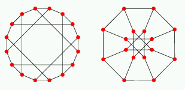
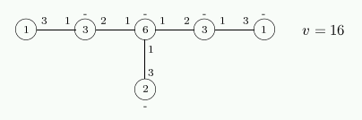

Up

Möbius-Kantor graph
There is a unique cubic symmetric (i.e., both vertex- and
edge-transitive) graph on 16 vertices known as the Möbius-Kantor graph.
Construction
The Möbius-Kantor graph is the bipartite point-line incidence graph
of the geometry with 8 points and 8 lines obtained by removing one
point from the affine plane AG(2,3) of order 3.
Group
The group is GL(2,3).2 of order 96.
It is vertex- and edge-transitive, with vertex stabilizer Sym(3).
Spectrum
The Möbius-Kantor graph has spectrum
±31, (±√3)4, ±13,
and is the unique graph with this spectrum.
Distribution diagram

The graph is an antipodal 2-cover of the 3-cube.
It is the unique 2-cover of the 3-cube without quadrangles, cf. BCN 9.2.10.
One can add 8 edges and obtain the 4-cube (Coxeter).
Reference
H. S. M. Coxeter,
Self-dual configurations and regular graphs,
Bull. Amer. Math. Soc. 56 (1950) 413-455.